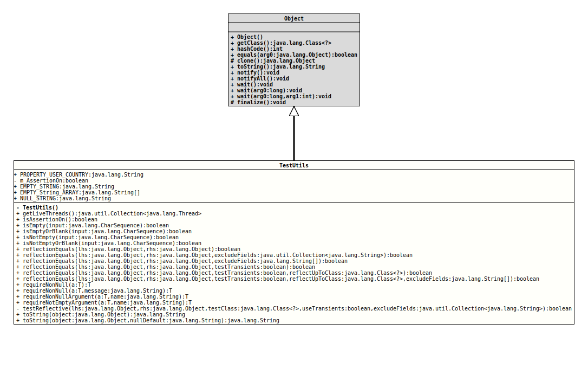

Package org.tquadrat.foundation.testutil
Class TestUtils
java.lang.Object
org.tquadrat.foundation.testutil.TestUtils
Some methods that are useful in the context of testing.
- Author:
- Thomas Thrien (thomas.thrien@tquadrat.org)
- Version:
- $Id: TestUtils.java 1074 2023-10-02 12:05:06Z tquadrat $
- Since:
- 0.1.0
- UML Diagram
-

UML Diagram for "org.tquadrat.foundation.testutil.TestUtils"
{kind=link}
-
Field Summary
FieldsModifier and TypeFieldDescriptionstatic final StringThe empty string.static final String[]An empty array ofStringinstances.private static booleanThe flag that tracks the assertion on/off status for this package.static final StringA String containing the sequence "null".static final StringThe system property for the code of country for the current user: "user.country". -
Constructor Summary
Constructors -
Method Summary
Modifier and TypeMethodDescriptionstatic final Collection<Thread> Returns all threads that are currently alive.static final booleanChecks whether JDK assertion is currently activated, meaning that the program was started with the command line flags-eaor-enableassertions.static final booleanisEmpty(CharSequence input) Tests if the given String isnullor the empty String.static final booleanisEmptyOrBlank(CharSequence input) Tests if the given String isnull, the empty String, or just containing whitespace.static final booleanisNotEmpty(CharSequence input) Tests if the given String is notnulland not the empty String.static final booleanisNotEmptyOrBlank(CharSequence input) Tests if the given String is notnull, not the empty String, and that it contains other characters than just whitespace.static final booleanreflectionEquals(Object lhs, Object rhs) This method uses reflection to determine if the two objects are equal.
It usesAccessibleObject.setAccessible(boolean)to gain access to private fields.static final booleanreflectionEquals(Object lhs, Object rhs, boolean testTransients) This method uses reflection to determine if the two objects are equal.
It usesAccessibleObject.setAccessible(boolean)to gain access to private fields.static final booleanreflectionEquals(Object lhs, Object rhs, boolean testTransients, Class<?> reflectUpToClass) This method uses reflection to determine if the two objects are equal.
It usesAccessibleObject.setAccessible(boolean)to gain access to private fields.static final booleanreflectionEquals(Object lhs, Object rhs, boolean testTransients, Class<?> reflectUpToClass, String[] excludeFields) This method uses reflection to determine if the two objects are equal.
It usesAccessibleObject.setAccessible(boolean)to gain access to private fields.static final booleanreflectionEquals(Object lhs, Object rhs, String[] excludeFields) This method uses reflection to determine if the two objects are equal.
It usesAccessibleObject.setAccessible(boolean)to gain access to private fields.static final booleanreflectionEquals(Object lhs, Object rhs, Collection<String> excludeFields) This method uses reflection to determine if the two objects are equal.
It usesAccessibleObject.setAccessible(boolean)to gain access to private fields.static final <T> TrequireNonNull(T a) Checks if the given valueaisnulland throws aNullPointerExceptionif it isnull; callsObjects.requireNonNull(Object)internally.static final <T> TrequireNonNull(T a, String message) Checks if the given valueaisnulland throws aNullPointerExceptionwith the specified message if it isnull.static final <T> TrequireNonNullArgument(T a, String name) static final <T> TrequireNotEmptyArgument(T a, String name) Checks if the given argumentaisnullor empty and throws aNullPointerExceptionif it isnull, or aIllegalArgumentExceptionif it is empty.
Only Strings, arrays,Collections, andMaps will be checked on being empty.
Because the interfaceEnumerationdoes not provide an API for the check on emptiness (hasMoreElements()will returnfalseafter all elements have been taken from theEnumerationinstance), the result for arguments of this type has to be taken with caution.
For instances ofStream, the methodStream.findAny()is used to determine if the stream has elements.private static booleantestReflective(Object lhs, Object rhs, Class<?> testClass, boolean useTransients, Collection<String> excludeFields) Tests the fields on the given instances on equal.static final Stringstatic final String
-
Field Details
-
PROPERTY_USER_COUNTRY
The system property for the code of country for the current user: "user.country".- See Also:
-
m_AssertionOn
The flag that tracks the assertion on/off status for this package. -
EMPTY_STRING
The empty string.- See Also:
-
EMPTY_String_ARRAY
An empty array ofStringinstances. -
NULL_STRING
A String containing the sequence "null".
-
-
Constructor Details
-
TestUtils
private TestUtils()No instance allowed for this class.
-
-
Method Details
-
getLiveThreads
Returns all threads that are currently alive.- Returns:
- The living threads.
-
isAssertionOn
Checks whether JDK assertion is currently activated, meaning that the program was started with the command line flags-eaor-enableassertions. If assertions are activated for some selected packages only andorg.tquadrat.testis not amongst these, ororg.tquadrat.testis explicitly disabled with-daor-disableassertions, this method will returnfalse. But even it may returntrue, it is possible that assertions are still not activated for some packages.- Returns:
trueif assertions are activated for the packageorg.tquadrat.foundation.testand hopefully also for any other package,falseotherwise.
-
isEmpty
Tests if the given String isnullor the empty String.- Parameters:
input- The String to test.- Returns:
trueif the given String reference isnullor the empty String.- Since:
- 0.1.0
-
isEmptyOrBlank
Tests if the given String isnull, the empty String, or just containing whitespace.- Parameters:
input- The String to test.- Returns:
trueif the given String reference is notnulland not the empty String.- Since:
- 0.1.0
- See Also:
-
isNotEmpty
Tests if the given String is notnulland not the empty String.- Parameters:
input- The String to test.- Returns:
trueif the given String reference is notnulland not the empty String.- Since:
- 0.1.0
-
isNotEmptyOrBlank
@API(status=STABLE, since="0.1.0") public static final boolean isNotEmptyOrBlank(CharSequence input) Tests if the given String is notnull, not the empty String, and that it contains other characters than just whitespace.- Parameters:
input- The String to test.- Returns:
trueif the given String reference is notnulland not the empty String, and it contains other characters than just whitespace.- Since:
- 0.1.0
- See Also:
-
reflectionEquals
@API(status=STABLE, since="0.0.5") public static final boolean reflectionEquals(Object lhs, Object rhs) This method uses reflection to determine if the two objects are equal.
It usesAccessibleObject.setAccessible(boolean)to gain access to private fields. This means that it will throw a security exception if run under a security manager, if the permissions are not set up correctly. It is also not as efficient as testing explicitly.
Transient members will be not be tested, as they are likely derived fields, and not part of the value of the object instance.
Static fields will not be tested. Superclass fields will be included.- Parameters:
lhs-thisobject.rhs- The other object- Returns:
trueif the two objects have tested equals,falseotherwise.- Author:
- Steve Downey (steve.downey@netfolio.com)
- Modified by:
- Thomas Thrien (thomas.thrien@tquadrat.org)
-
reflectionEquals
@API(status=STABLE, since="0.0.5") public static final boolean reflectionEquals(Object lhs, Object rhs, Collection<String> excludeFields) This method uses reflection to determine if the two objects are equal.
It usesAccessibleObject.setAccessible(boolean)to gain access to private fields. This means that it will throw a security exception if run under a security manager and the permissions are not set up correctly. It is also not as efficient as testing explicitly.
Transient members will be not be tested, as they are likely derived fields, and not part of the value of the object instance.
Static fields will not be tested. Superclass fields will be included.- Parameters:
lhs-thisobject.rhs- The other objectexcludeFields- ACollectionof String field names to exclude from testing.- Returns:
trueif the two objects have tested equals,falseotherwise.- Author:
- Steve Downey (steve.downey@netfolio.com)
- Modified by:
- Thomas Thrien (thomas.thrien@tquadrat.org)
-
reflectionEquals
@API(status=STABLE, since="0.0.5") public static final boolean reflectionEquals(Object lhs, Object rhs, String[] excludeFields) This method uses reflection to determine if the two objects are equal.
It usesAccessibleObject.setAccessible(boolean)to gain access to private fields. This means that it will throw a security exception if run under a security manager, if the permissions are not set up correctly. It is also not as efficient as testing explicitly.
Transient members will be not be tested, as they are likely derived fields, and not part of the value of the object instance.
Static fields will not be tested. Superclass fields will be included.- Parameters:
lhs-thisobject.rhs- The other objectexcludeFields- An array of String field names to exclude from testing; may benull.- Returns:
trueif the two objects have tested equals,falseotherwise.- Author:
- Steve Downey (steve.downey@netfolio.com)
- Modified by:
- Thomas Thrien (thomas.thrien@tquadrat.org)
-
reflectionEquals
@API(status=STABLE, since="0.0.5") public static final boolean reflectionEquals(Object lhs, Object rhs, boolean testTransients) This method uses reflection to determine if the two objects are equal.
It usesAccessibleObject.setAccessible(boolean)to gain access to private fields. This means that it will throw a security exception if run under a security manager, if the permissions are not set up correctly. It is also not as efficient as testing explicitly.
If thetestTransientsparameter is set totrue, transient members will be tested, otherwise they are ignored, as they are likely derived fields, and not part of the value of the object instance.
Static fields will not be tested. Superclass fields will be included.- Parameters:
lhs-thisobject.rhs- The other objecttestTransients-truewhether to include transient fields,falseotherwise.- Returns:
trueif the two objects have tested equals,falseotherwise.- Author:
- Steve Downey (steve.downey@netfolio.com)
- Modified by:
- Thomas Thrien (thomas.thrien@tquadrat.org)
-
reflectionEquals
@API(status=STABLE, since="0.0.5") public static final boolean reflectionEquals(Object lhs, Object rhs, boolean testTransients, Class<?> reflectUpToClass) This method uses reflection to determine if the two objects are equal.
It usesAccessibleObject.setAccessible(boolean)to gain access to private fields. This means that it will throw a security exception if run under a security manager, if the permissions are not set up correctly. It is also not as efficient as testing explicitly.
If thetestTransientsparameter is set totrue, transient members will be tested, otherwise they are ignored, as they are likely derived fields, and not part of the value of the object instance.
Static fields will not be tested. Superclass fields will be appended up to and including the specified superclass. Anullsuperclass is treated asObject.- Parameters:
lhs-thisobject.rhs- The other objecttestTransients-truewhether to include transient fields,falseotherwise.reflectUpToClass- The superclass to reflect up to (inclusive), may benull- Returns:
trueif the two objects have tested equals,falseotherwise.- Author:
- Steve Downey (steve.downey@netfolio.com)
- Modified by:
- Thomas Thrien (thomas.thrien@tquadrat.org)
-
reflectionEquals
@API(status=STABLE, since="0.0.5") public static final boolean reflectionEquals(Object lhs, Object rhs, boolean testTransients, Class<?> reflectUpToClass, String[] excludeFields) This method uses reflection to determine if the two objects are equal.
It usesAccessibleObject.setAccessible(boolean)to gain access to private fields. This means that it will throw a security exception if run under a security manager, if the permissions are not set up correctly. It is also not as efficient as testing explicitly.
If thetestTransientsparameter is set totrue, transient members will be tested, otherwise they are ignored, as they are likely derived fields, and not part of the value of the object instance.
Static fields will not be tested. Superclass fields will be appended up to and including the specified superclass. Anullsuperclass is treated asObject.- Parameters:
lhs-thisobject.rhs- The other objecttestTransients-truewhether to include transient fields,falseotherwise.reflectUpToClass- The superclass to reflect up to (inclusive), may benullexcludeFields- An array of String field names to exclude from testing; may benull.- Returns:
trueif the two objects have tested equals,falseotherwise.- Author:
- Steve Downey (steve.downey@netfolio.com)
- Modified by:
- Thomas Thrien (thomas.thrien@tquadrat.org)
-
requireNonNull
Checks if the given valueaisnulland throws aNullPointerExceptionif it isnull; callsObjects.requireNonNull(Object)internally.- Type Parameters:
T- The type of the value to check.- Parameters:
a- The value to check.- Returns:
- The value if it is not
null. - Throws:
NullPointerException-aisnull.
-
requireNonNull
Checks if the given valueaisnulland throws aNullPointerExceptionwith the specified message if it isnull. CallsObjects.requireNonNull(Object, String)internally.- Type Parameters:
T- The type of the value to check.- Parameters:
a- The value to check.message- The message that is set to the thrown exception.- Returns:
- The value if it is not
null. - Throws:
NullPointerException-aisnull.
-
requireNonNullArgument
@API(status=STABLE, since="0.0.5") public static final <T> T requireNonNullArgument(T a, String name) - Type Parameters:
T- The type of the argument to check.- Parameters:
a- The argument to check.name- The name of the argument; this is used for the error message.- Returns:
- The argument if it is not
null. - Throws:
IllegalArgumentException-nameis empty.NullPointerException-nameoraisnull.
-
requireNotEmptyArgument
@API(status=STABLE, since="0.0.5") public static final <T> T requireNotEmptyArgument(T a, String name) Checks if the given argumentaisnullor empty and throws aNullPointerExceptionif it isnull, or aIllegalArgumentExceptionif it is empty.
Only Strings, arrays,Collections, andMaps will be checked on being empty.
Because the interfaceEnumerationdoes not provide an API for the check on emptiness (hasMoreElements()will returnfalseafter all elements have been taken from theEnumerationinstance), the result for arguments of this type has to be taken with caution.
For instances ofStream, the methodStream.findAny()is used to determine if the stream has elements. Usingcount()may have negative impact on performance if the argument has a large amount of elements.- Type Parameters:
T- The type of the argument to check.- Parameters:
a- The argument to check; may benull.name- The name of the argument; this is used for the error message.- Returns:
- The argument if it is not
null. - Throws:
NullPointerException-nameoraisnull.IllegalArgumentException-nameorais empty.
-
testReflective
private static boolean testReflective(Object lhs, Object rhs, Class<?> testClass, boolean useTransients, Collection<String> excludeFields) Tests the fields on the given instances on equal.- Parameters:
lhs- The left-hand object.rhs- The right-hand object.testClass- The class that defines the details.useTransients-trueif to test transient fields also,falseotherwise.excludeFields- Set of field names to exclude from testing.- Returns:
trueif all relevant fields are equal,falseotherwise.
-
toString
Converts the given argumentobjectinto aString, usually by calling itstoString()method. If the value of the argument isnull, the text "null" will be returned instead. Arrays will be converted to a string through calling the respectivetoString()method fromArrays(this distinguishes this implementation from {link java.util.Objects#toString(Object, String)}). Values of typeDateorCalendarwill be translated based on the default locale - whatever that is.- Parameters:
object- The object; may benull.- Returns:
- The object's string representation.
- See Also:
-
toString
@API(status=STABLE, since="0.0.5") public static final String toString(Object object, String nullDefault) Converts the given argumentobjectinto aString, usually by calling itstoString()method. If the value of the argument isnull, the text provided as thenullDefaultargument will be returned instead. Arrays will be converted to a string through calling the respectivetoString()method fromArrays(this distinguishes this implementation from {link java.util.Objects#toString(Object, String)}). Values of typeDateorCalendarwill be translated based on the default locale - whatever that is.- Parameters:
object- The object; may benull.nullDefault- The text that should be returned ifobjectisnull.- Returns:
- The object's string representation.
- See Also:
-